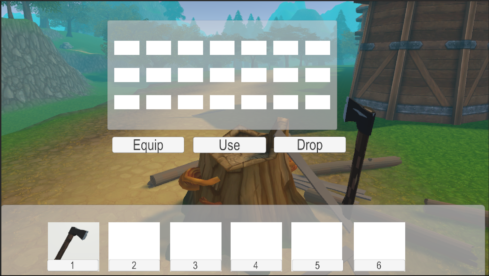
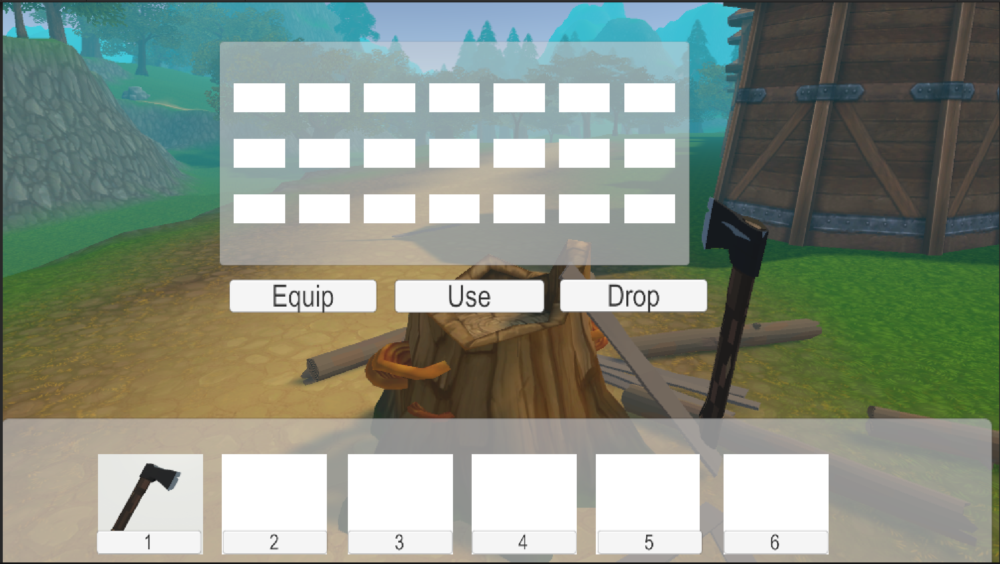

Project Overview
This project was my attempt to teach myself the basics of survival crafting games-especially gathering, which is essential for crafting and building. Ironically, that mirrors my own journey: gathering knowledge and skills so I can one day build immersive, creative games. I have so many stories I want to tell, and I hope I find the time to tell them all.
I started with free assets from the Unity Asset Store. First, I found an environment scene with trees. Then I sourced an axe, logs, and planks from three different packages and tied them together into a small demo. I created a player camera, built an inventory system and toolbar, and implemented logic for chopping down and regrowing trees. The trees drop logs, which the player can pick up and convert into planks.
In my best Wizard of Oz impression: "Pay no attention to the inventory slots in the middle of the screen!"
Inventory Logic

Tree Logic
These Images show how the tree logic works.
 

Logs-Transport-Planks
Here we see the Logs and the player transport and drop them, and chopping them into planks.
Survival Test Demo
▶ PLAY DEMO
Controls: Arrows / WASD = Move | Space = Jump | Left Mouse = Swing Axe | G = Drop Log | 1-6 = Tool Bar Slots
Esc = Mouse Pointer for Exit.